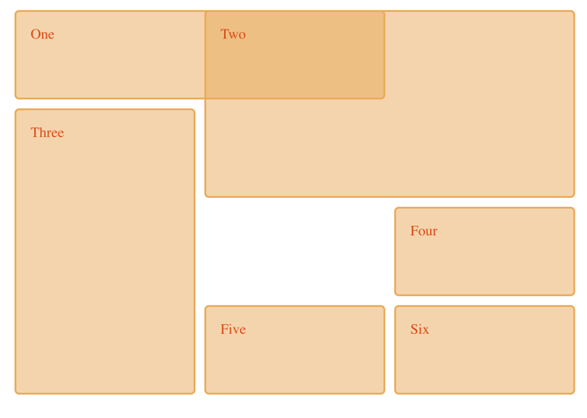
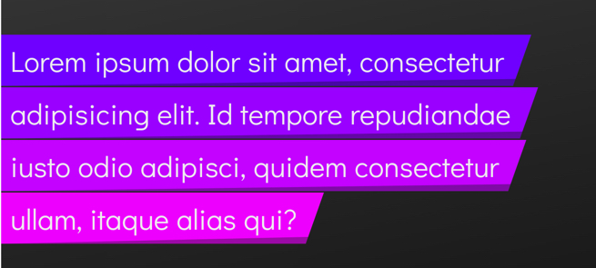

Elliot Evans
Web Application Developer
at Codeweavers
Web Application Developer
at Codeweavers
1994
1995
1996
Header
Header
Header
Header
Main
Main
Main
Aside
Footer
Footer
Footer
Footer
During 1996 the typical way to style a document was to use the display property 'table'.
Table is still being used today, currently its the de facto way of styling emails.
.clearfix {
overflow: auto;
}
.clearfix::after {
content: "";
clear: both;
display: table;
}
.flex-container {
display: flex;
flex-direction: column;
justify-content: space-evenly;
}
$font-stack: Helvetica, sans-serif;
$primary-color: #333;
body {
font: 100% $font-stack;
color: $primary-color;
}
@mixin flex {
display: -webkit-flex;
display: flex;
}
.row {
@include flex;
}
$font: (
heading: 32px,
subHeading: 24px,
default: 16px
)
.heading-content {
content: map-get($merged, heading);
}
.wrapper {
display: grid;
grid-template-columns: repeat(3, 1fr);
grid-gap: 10px;
grid-auto-rows: minmax(100px, auto);
}
.one {
grid-column: 1 / 3;
grid-row: 1;
}
.two {
grid-column: 2 / 4;
grid-row: 1 / 3;
}
.three {
grid-column: 1;
grid-row: 2 / 5;
}
.four {
grid-column: 3;
grid-row: 3;
}
.five {
grid-column: 2;
grid-row: 4;
}
.six {
grid-column: 3;
grid-row: 4;
}

:root {
--main-bg-color: brown;
}
.one {
color: white;
background-color: var(--main-bg-color);
margin: 10px;
width: 50px;
height: 50px;
display: inline-block;
}
.el span {
box-decoration-break: clone;
background: hsl(276, 100%, 50%);
}
@supports (background: paint(slanted-bg)) {
.el.is-loaded span {
padding-right: 30px;
background: paint(slanted-bg);
}
}

style.textContent = `
:host {
display: inline-block;
}
.lh-button {
background: gray;
color: red;
}
`;